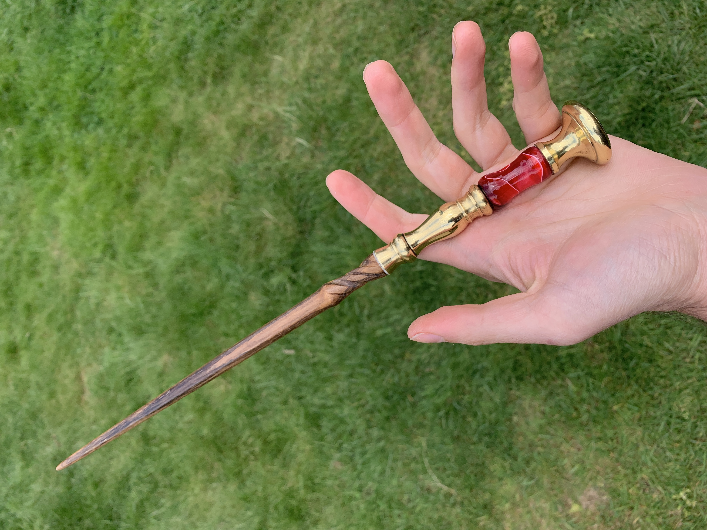
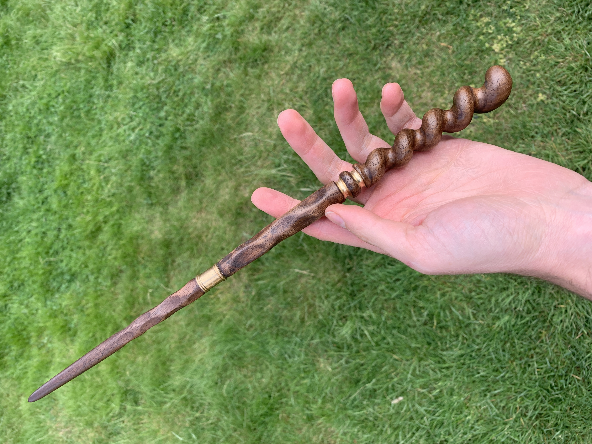
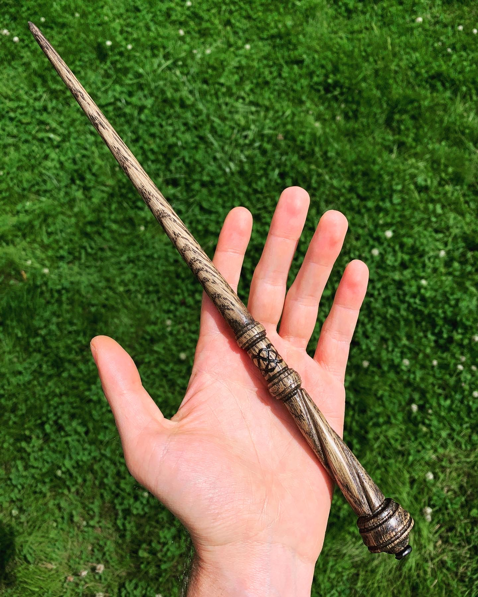
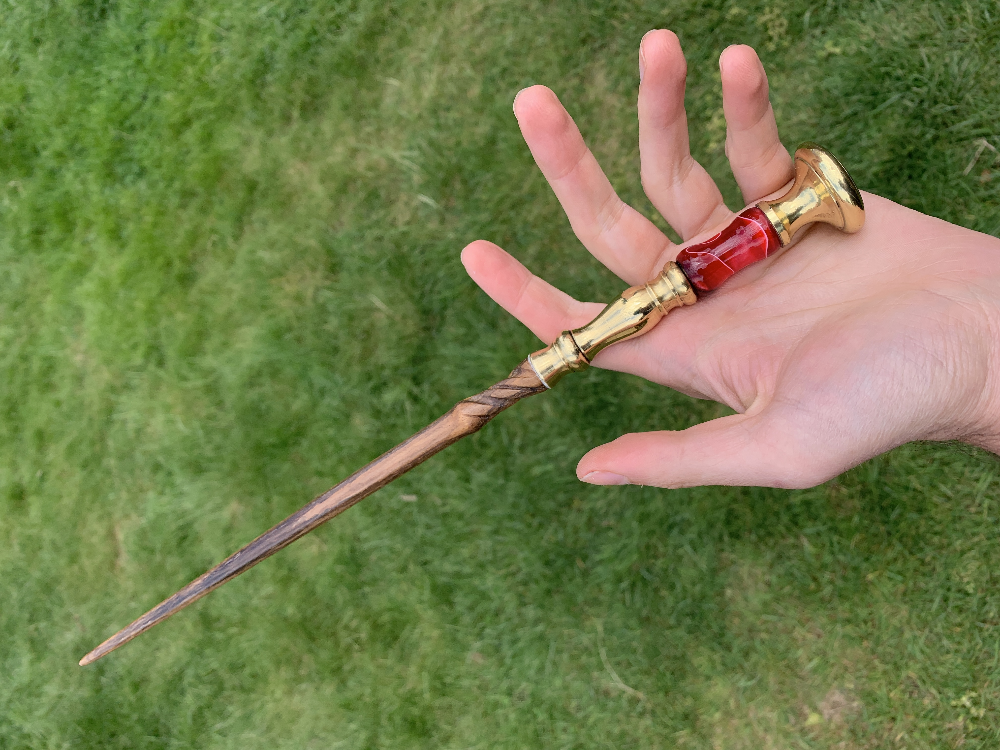
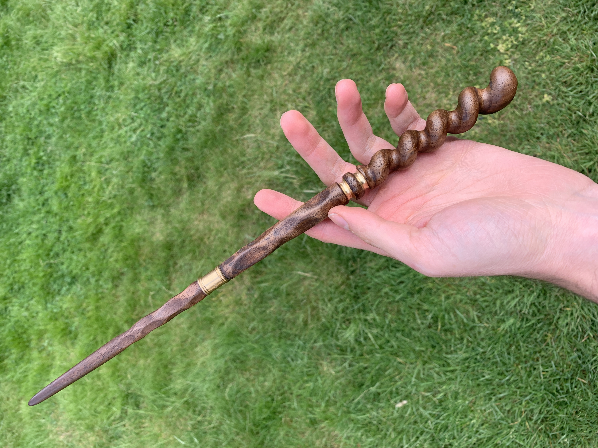
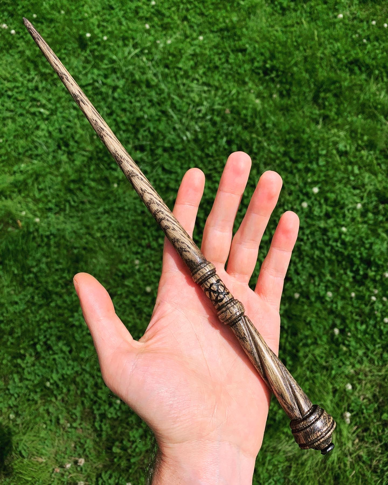
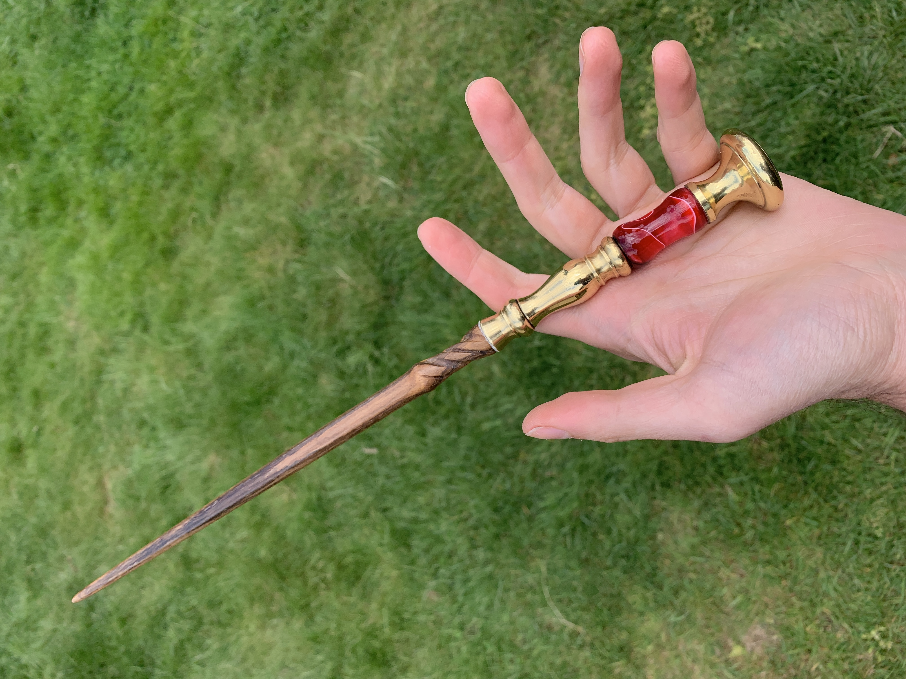
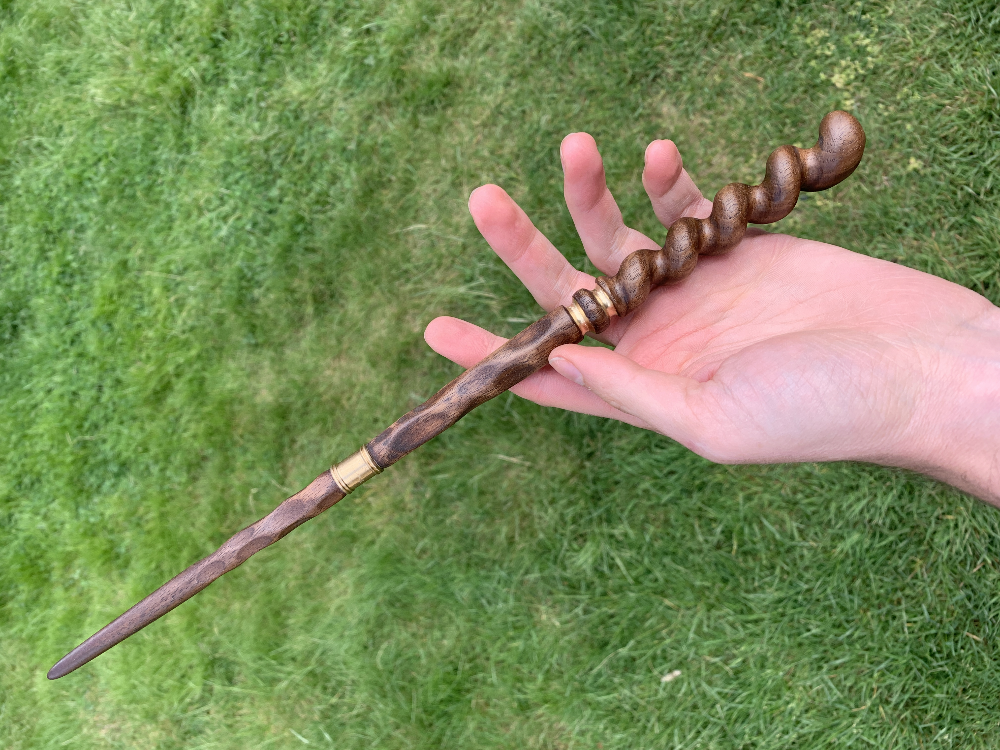
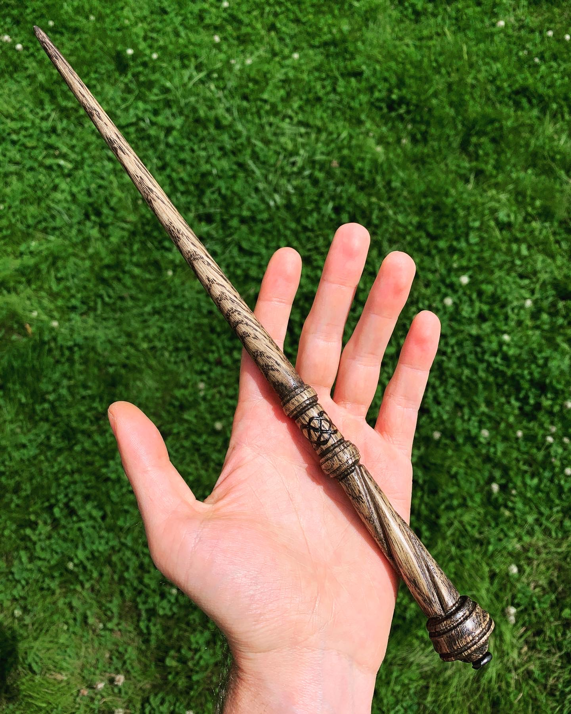

Text Description
"To see a World in a Grain of Sand And a Heaven in a Wild Flower, Hold Infinity in the palm of your hand And Eternity in an hour." -William Blake.
This quote has always given me inspiratoin in my creativity. You can indeed see entire worlds in the smallest details, and with the tools provided in technologies both ancient and new, we are capable of creating such wondrous things in this world. With little to no experience, I present to you some of those Works.



Text Description